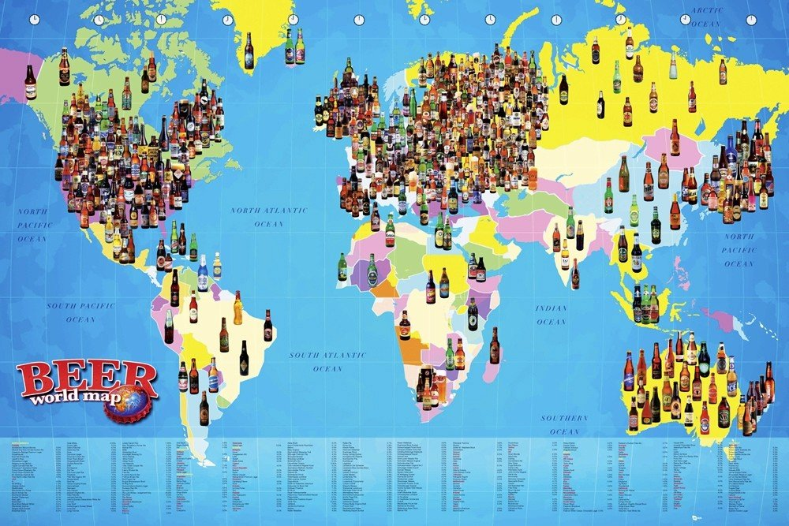

Welcome to Sláinte, the beer tracking app with a difference! With this app you can keep tabs on all the beers you have sampled from around the world. Out of inspiration and want to try a beer from our catalogue? Hit the Random Beer button at the bottom of the home page. View your Stats on our homepage to see how many beers you have tried, your average rating, and the average ABV of the beers you drink. The idea of behind this app was to track New Year’s Resolutions. Our resolution, DRINK MORE BEER!
Copyright © CodeClan-e27-Sláinte